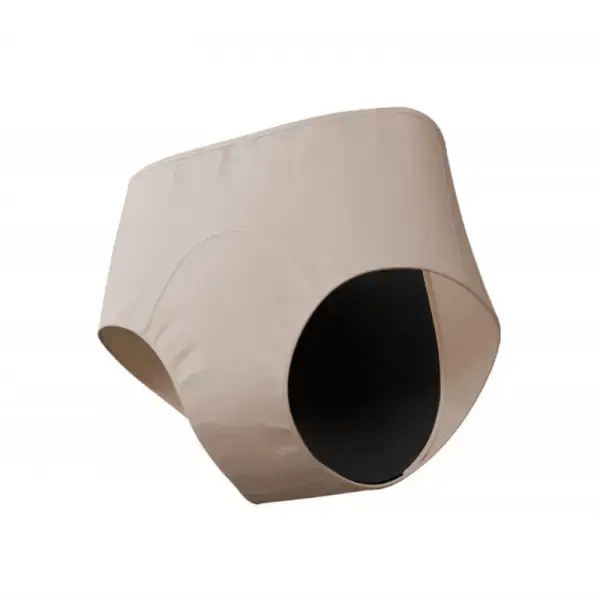
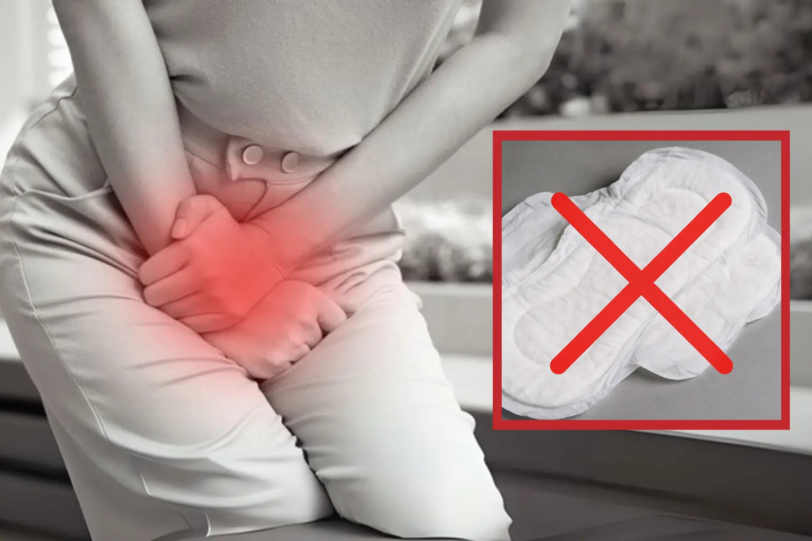
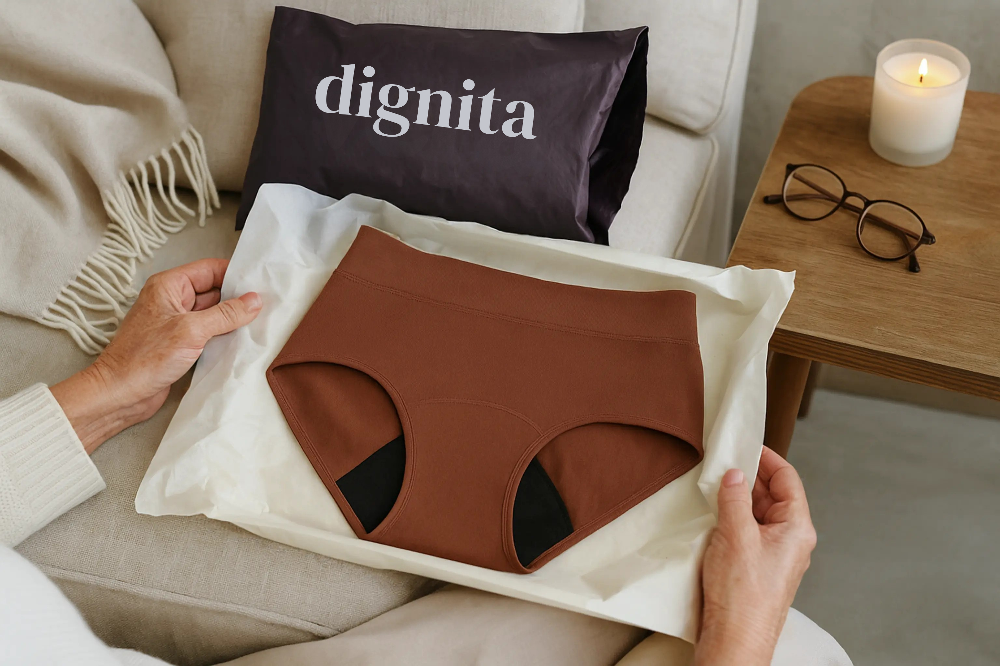
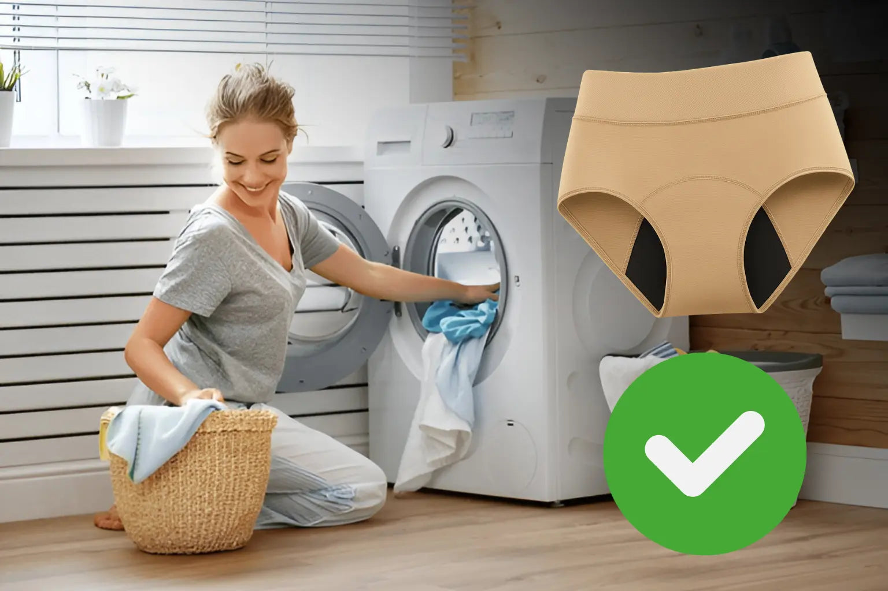
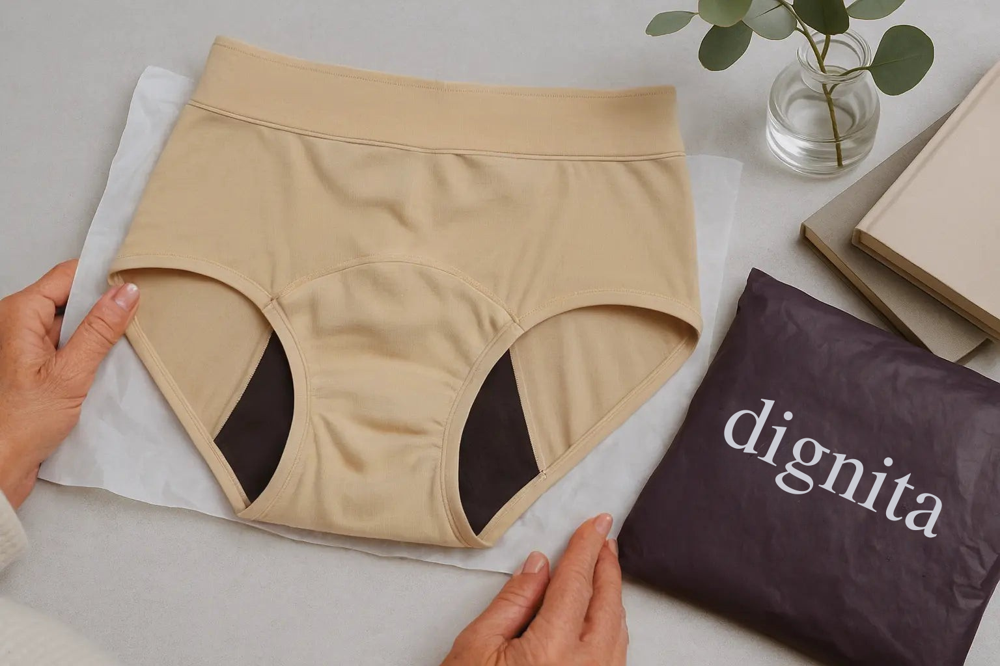
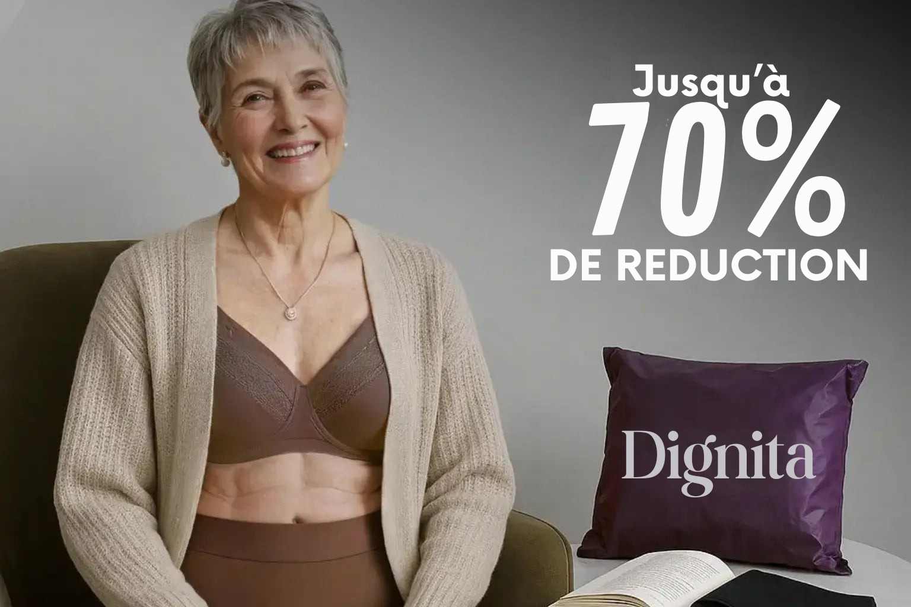

Réunion. Mardi. 14h37.
Le moment exact où j'ai cessé d'être une femme et suis devenue une victime.
Pas une victime d'agression. Pas une victime de maladie.
Une victime de mon propre corps.
Tu connais cette sensation ?
Pas celle où tu as envie d'aller aux toilettes.
Non.
Cette sensation où ton corps décide pour toi.
La Cascade Neurologique De La Honte
Laisse-moi te décrire ce qui se passe dans ton cerveau en 0,3 secondes :
0,0s — Tu sens la chaleur.
0,1s — Ton amygdale (centre de la peur) s'active.
0,2s — Ton cortex préfrontal (la logique) panique.
0,3s — Ton corps entier est en mode ALERTE ROUGE.
Ton cœur accélère. Tes mains deviennent moites. Ta respiration se bloque.
Ce n'est pas "juste une fuite".
C'est un traumatisme corporel qui se répète 147 fois par jour.
Chaque. Jour.
Ce Mardi À 14h37
Présentation trimestrielle. 23 personnes. Mon patron. Mes collègues. L'équipe au complet.
Slide 12 sur 20.
JE SENS LA CHALEUR.
Mon cerveau explose :
"Non non non non NON PAS MAINTENANT PAS ICI PAS DEVANT EUX"
Mais ton corps s'en fout de tes supplications mentales.
Il fait ce qu'il veut. Quand il veut.
Et toi ? Tu n'es qu'une spectatrice impuissante de ta propre humiliation.
La Phrase Qui M'a Détruite
Je bredouille une excuse. Je me lève. Mes jambes tremblent.
Je fais trois pas vers la porte.
ET MON PATRON LANCE DEVANT TOUT LE MONDE :
"Encore, Lisa ? ENCORE ? Ma femme a géré ça avec des serviettes quand elle a eu 50 ans. C'est pas compliqué, franchement. Dépêche-toi, on a du boulot."
Puis... le silence.
Ce silence où tu SAIS que tout le monde sait.
Puis... les rires.
Étouffés. Gênés. Mais des rires quand même.
Mon visage brûle.
Pas de honte.
DE RAGE PURE.
Parce qu'il n'a AUCUNE IDÉE.
Aucune idée de ce que c'est de :
❌ Calculer chaque pause toilette comme une opération militaire
❌ Refuser des invitations parce que "et si..."
❌ Porter du noir tout le temps "au cas où"
❌ Vérifier ta chaise avant de te lever CHAQUE FOIS
❌ Garder 3 culottes de secours dans ton sac comme si t'avais 5 ans
❌ Arrêter de rire pour ne pas "déclencher" une fuite
❌ Négocier avec ton propre corps pour tenir 2 heures de plus
Aucune idée de ce que c'est de devenir prisonnière de son propre corps.
Les Serviettes ? Une Blague Cruelle
Ce soir-là, 23h47.
Incapable de dormir.
Tremblante de rage et d'humiliation.
J'ai cherché. Comme tu cherches probablement maintenant.
"Meilleures protections fuites urinaires"
"Solutions incontinence femme 50 ans"
"Comment arrêter les fuites définitivement"
Et tu sais ce que j'ai trouvé ?
DES SERVIETTES.
Plus épaisses. Plus absorbantes. Plus chères. Plus "discrètes" (spoiler : elles ne le sont pas).
Mais toujours la même chose qui ne marche pas.
Tu veux savoir pourquoi ?
La Vérité Que L'Industrie Te Cache
Les serviettes hygiéniques ne sont PAS conçues pour l'urine.
Je répète parce que c'est crucial :
LES SERVIETTES SONT CONÇUES POUR LE SANG MENSTRUEL. PAS POUR L'URINE.
La différence ?
🩸 Le sang : Épais. Lent. Coagule. Reste en surface.
💧 L'urine : Liquide. Rapide. S'écoule. Pénètre TOUT.
C'est comme utiliser une passoire pour retenir de l'eau.
Physiquement. Chimiquement. Biologiquement.
ÇA NE PEUT PAS MARCHER.
Et pourtant, c'est ce qu'on te vend depuis 10 ans.
Et Puis... Le Cœur Protect+
3h12 du matin.
Je tape "solution incontinence qui MARCHE vraiment".
Page 4 de Google (oui, j'étais désespérée).
Je tombe sur un article. Une femme raconte. Une histoire qui ressemble à la mienne.
Elle mentionne quelque chose que je n'avais jamais entendu :
"Le Cœur Protect+ de Dignita a changé ma vie en 72 heures."
Pas "amélioré". Pas "aidé".
"CHANGÉ MA VIE."
J'ai cliqué. J'ai lu. J'ai pleuré.
Parce que pour la première fois en 10 ans, quelqu'un comprenait.
Les 10 Raisons Pour Lesquelles Le Cœur Protect+ De Dignita A Transformé Ma Vie (Et Pourquoi Ça Va Transformer La Tienne)
1. Le Cœur Protect+ : 4 Couches Qui Font Ce Que 10 Ans De Serviettes N'Ont Jamais Fait
Écoute-moi bien.
J'ai tout essayé. TOUT.
Serviettes classiques. Maxi. Ultra. Super-mega-ultra-max-protection-titanium.
Couches pour adultes déguisées en "protections discrètes".
Doubles épaisseurs qui te donnent l'impression de porter un matelas.
Résultat ?
Des centaines d'euros gaspillés.
Des milliers d'heures d'angoisse.
Zéro solution.
Et puis j'ai compris pourquoi.
Le Problème N'Est Pas Ton Corps. C'est La Technologie.
Les serviettes utilisent une seule couche absorbante.
Une.
Qui doit :
• Absorber le liquide ✗ (trop lent)
• Le retenir ✗ (déborde)
• Neutraliser l'odeur ✗ (masque juste)
• Rester sèche ✗ (impossible)
C'est comme demander à un seul organe de faire le boulot de tout ton corps.
Ça. Ne. Peut. Pas. Marcher.
Le Cœur Protect+ : La Révolution À 4 Couches
Dignita a fait ce que personne n'avait jamais fait.
Ils ont séparé chaque fonction en une couche dédiée.
Comme ton corps a des organes spécialisés, le Cœur Protect+ a des couches spécialisées.
Voici comment ça change TOUT :
🔹 Couche 1 : Le Bouclier Sec (Coton Biologique Premium)
Ce qu'elle fait : Elle aspire l'humidité en 0,8 secondes.
Pas "absorbe lentement". ASPIRE INSTANTANÉMENT.
Résultat : Ta peau reste sèche. Vraiment sèche.
Pas "moins mouillée qu'avant" — SÈCHE.
L'impact psychologique :
Tu te souviens de la sensation d'humidité contre ta peau ? Cette sensation qui te rappelle toutes les 3 minutes que tu es "mouillée" ?
Elle disparaît.
Pour la première fois en 10 ans, ton cerveau n'envoie plus le signal : "Danger. Tu es mouillée. Panique. Maintenant."
🔹 Couche 2 : Le Tunnel Express (Technologie d'Évacuation Rapide)
Ce qu'elle fait : Elle transfère le liquide vers le bas en 1,2 secondes.
Imagine un toboggan ultra-rapide.
Le liquide descend. Ne reste pas en surface. Ne remonte pas.
Résultat :
Même 8 heures après, la surface est 100% sèche.
Pas "presque sèche". SÈCHE.
Tu peux toucher. Vérifier. Palper.
Rien.
L'impact psychologique :
Tu arrêtes de te "vérifier" toutes les 10 minutes.
Tu arrêtes de te demander "est-ce que ça se sent ?".
Tu arrêtes d'aller aux toilettes juste pour vérifier.
Tu vis. Enfin.
🔹 Couche 3 : Le Destructeur D'Odeurs (Ions D'Argent Médicaux)
Ce qu'elle fait : Elle DÉTRUIT l'ammoniaque (la cause de l'odeur) au niveau moléculaire.
Pas un parfum qui masque.
Pas un produit chimique qui "neutralise".
Une destruction complète de la molécule d'odeur.
Résultat :
Zéro odeur. Jamais. Dans aucune circonstance.
Après 10 heures. Après du sport. Après une journée de stress.
ZÉRO.
🔹 Couche 4 : La Forteresse Impénétrable (Barrière Anti-Fuite TPU)
Ce qu'elle fait : Elle retient jusqu'à 60ml de liquide pendant 72 heures.
60ml.
C'est 4 fois plus qu'une serviette maxi.
Pendant 72 heures.
Sans. Bouger. D'un. Millimètre.
Résultat :
Tu peux rire. Éternuer. Courir. Sauter. Danser. Vivre.
Sans cette angoisse qui te serre la gorge.
L'impact psychologique :
C'est le retour de ta vie.
Tu acceptes une invitation sans calculer où sont les toilettes.
Tu regardes une comédie sans retenir tes rires.
Tu fais du sport sans porter du noir "au cas où".
Tu dors 8 heures sans te réveiller en panique.
TU VIS SANS PEUR.
Les Questions Que Tu Te Poses (Soyons Honnêtes)
NON. C'est 3mm d'épaisseur. Moins qu'une serviette classique. Invisible sous un jean moulant. Invisible sous une robe. Invisible sous TOUT.
OUI. J'ai testé. Pendant une semaine complète. Même après 10 heures en réunion. Surface 100% sèche. Zéro humidité. Zéro sensation.
Pour 98% des femmes avec fuites légères à modérées (jusqu'à 60ml). Si tu changes de serviette 3-4 fois par jour → Dignita marche. Si tu changes toutes les heures → Combine avec une protection légère au début.
2. Fini La "Vérification Panique" Toutes Les 10 Minutes
Tu la connais, cette habitude ?
Cette main qui descend discrètement pour "vérifier".
Ce moment où tu te lèves et tu regardes ta chaise.
Cette visite aux toilettes pas parce que tu as besoin mais juste pour vérifier.
Le Cycle De La Panique
Ton cerveau fait ça 147 fois par jour :
1. Signal d'alerte : "Et si ça a bougé ?"
2. Vérification tactile discrète
3. Soulagement temporaire (30 secondes)
4. Nouvelle angoisse : "Mais maintenant ?"
5. Retour au point 1
C'est un TOC que personne ne diagnostique.
Parce que tu ne te lave pas les mains 50 fois.
Tu vérifies juste si tu es toujours "en sécurité" 147 fois par jour.
Dignita : La Fin Du Cycle
Le Cœur Protect+ contient des micro-fils de silicone médical tissés dans le gusset.
Résultat :
Ça ne bouge pas. Jamais.
Tu cours → Ça reste en place.
Tu danses → Ça reste en place.
Tu t'assois → Ça reste en place.
Tu te lèves → Ça reste en place.
L'impact psychologique :
Après 3 jours, ton cerveau arrête d'envoyer le signal "vérifie".
Après 1 semaine, tu oublies que tu la portes.
Après 2 semaines, tu réalises que tu n'as pas "vérifié" depuis 4 heures.
C'est le retour de la liberté mentale.
Non. C'est du silicone médical hypoallergénique. Testé dermatologiquement. Certifié Oeko-Tex.
3. Arrête De Polluer La Planète Avec Tes Traumatismes

136 KILOS.
C'est le poids exact de déchets plastiques qu'une femme produit avec des protections jetables dans sa vie.
Chaque protection met 500 à 800 ans à se décomposer.
Lis cette phrase encore une fois.
800 ans.
Tes arrière-arrière-arrière-arrière-arrière-arrière-arrière-petits-enfants verront encore TES protections sur Terre.
La Culpabilité Silencieuse
À chaque fois que je jetais une protection, je pensais :
"Celle-là va rester là pendant 800 ans. À cause de mon corps qui ne marche pas."
Ce n'était pas juste de la culpabilité environnementale.
C'était de la honte corporelle transformée en pollution.
Mon problème → Déchet éternel → Culpabilité permanente
Un cycle infernal.
Dignita : La Libération Écologique ET Psychologique
Une culotte Dignita remplace 200 protections jetables.
Durée de vie : 2-3 ans.
Impact environnemental : 136 kg de plastique évités.
Mais surtout :
Économie psychologique : 600 moments de culpabilité en moins par an.
Moyenne : 19 000 protections dans une vie × 7g = 133 kg minimum.
4. 700€ Par An Que Tu Arrêtes De Jeter À La Poubelle (Littéralement)

Fais ce calcul douloureux avec moi.
Prix moyen d'une protection pour incontinence : 0,30€
Nombre utilisé par jour : 3-4
Coût quotidien : 0,90-1,20€
Coût mensuel : 27-36€
Coût annuel : 324-432€
Sur 20 ans ? 6 480 à 8 640€.
Mais Le Vrai Coût N'Est Pas Financier
C'est le coût psychologique de financer ton problème tous les mois.
Chaque achat est un rappel :
"Mon corps ne marche pas."
"Je dois acheter des protections toute ma vie."
"Je ne guérirai jamais."
C'est une taxe mensuelle sur ton estime de toi.
Dignita : L'Investissement Dans Ta Liberté
Prix d'une culotte Dignita : 30€
Durée de vie : 2-3 ans
Nombre nécessaire : 3-4 culottes
Coût total : 90-120€ pour 2-3 ans
Tu économises 75% minimum.
Mais surtout :
Tu arrêtes de payer pour ton problème.
Tu investis dans ta solution.
2-3 ans avec lavage normal. Certaines clientes : 4 ans et elles fonctionnent encore parfaitement.
5. Développée Par Des Gynécos Qui COMPRENNENT (Enfin)
Tu sais ce qui m'a vraiment convaincue ?
Pas le marketing.
Pas les promesses.
Pas les pubs Instagram.
Les gynécologues qui la recommandent à leurs patientes.
Pourquoi C'Est Révolutionnaire
Pendant 10 ans, mes médecins m'ont dit :
• "Faites des exercices de Kegel" (j'ai fait. 18 mois. Zéro amélioration)
• "Perdez du poids" (merci pour la culpabilité bonus)
• "C'est normal à votre âge" (cette phrase...)
• "On peut faire une chirurgie" (avec 40% de récidive)
Personne ne m'a JAMAIS proposé une vraie solution non-invasive.
Dignita : La Solution Que Les Médecins Cherchaient
Développée AVEC des gynécologues français.
Testée EN CLINIQUE.
Approuvée par des professionnels qui voient 500+ femmes comme toi chaque mois.
Pourquoi ils la recommandent ?
✅ Non-invasive (zéro chirurgie)
✅ Sans médicaments (zéro effets secondaires)
✅ Efficacité cliniquement prouvée
✅ Restaure la dignité sans traitement médical
"Je recommande Dignita à mes patientes parce que c'est la première fois en 30 ans de carrière que j'ai une solution qui fonctionne vraiment, sans risque, sans douleur, sans honte. Mes patientes pleurent de soulagement."
— Dr Sophie Pichard, Urogynecologue-Obstétricienne, CHU Marseille
Parce que les serviettes sont pour les RÈGLES. Dignita est pour l'INCONTINENCE. Ce n'est pas la même physiologie. Pas la même solution.
6. Zéro Odeur Pour La Première Fois En 10 Ans
Parlons de ce dont PERSONNE ne parle.
L'odeur.
Cette angoisse silencieuse qui te ronge 24h/24.
La Terreur Olfactive
Tu la connais, cette peur ?
Tu entres dans un ascenseur. Il y a 4 personnes.
Ton cerveau hurle :
"Est-ce qu'ils sentent quelque chose ?"
"Est-ce que c'est moi ?"
"Pourquoi cette femme renifle ?"
"Oh mon Dieu elle a senti"
Tu te parfumes 3 fois par jour.
Tu mets des lingettes parfumées dans ton sac.
Tu évites les espaces confinés.
Tu deviens un fantôme qui fuit les vivants.
Dignita : La Destruction Moléculaire De L'Odeur
Les ions d'argent intégrés dans la Couche 3 DÉTRUISENT l'ammoniaque.
Pas masquent. DÉTRUISENT.
Au niveau moléculaire.
Résultat :
Après 10 heures → Zéro odeur
Après du sport → Zéro odeur
Après une journée de stress → Zéro odeur
JAMAIS D'ODEUR.
L'Impact Psychologique
Tu peux serrer tes petits-enfants sans te demander s'ils vont sentir quelque chose.
Tu peux monter dans un Uber sans ouvrir la fenêtre "au cas où".
Tu peux faire du yoga en groupe sans paniquer.
Tu peux entrer dans un ascenseur bondé sans retenir ta respiration.
Tu redeviens humaine.
Non. Intégré dans les fibres. Dure aussi longtemps que la culotte. Testé 300+ cycles.
7. Machine À Laver + Sèche-Linge = C'EST TOUT
Tu veux savoir ce qui me rendait folle avec les autres "culottes réutilisables" ?
LE PROTOCOLE DE LA NASA POUR LES LAVER.
Le Cirque Des Autres Marques
📋 "Rincez à l'eau froide immédiatement"
📋 "Lavez à la main en premier"
📋 "Utilisez un cycle délicat à 30°C maximum"
📋 "Pas de sèche-linge JAMAIS"
📋 "Séchez à plat à l'ombre"
📋 "Ne tordez pas"
📋 "N'utilisez pas d'adoucissant"
📋 "Ne respirez pas trop fort à côté"
STOP.
J'ai pas le temps de traiter mes culottes comme des bébés prématurés.
Dignita : Balance + Oublie
Tu la balances dans ta machine avec tes autres fringues.
Température normale. Cycle normal. Sèche-linge OK.
Point.
La protection reste intacte. L'efficacité ne change pas.
Elle marche aussi bien au 200ème lavage qu'au premier jour.
Non. Testée 300 cycles haute température. Tu la porteras 2-3 ans AVANT que ça pose problème.
8. Garantie 30 Jours Ou Remboursement TOTAL (Absolument Sans Risque)
Je sais EXACTEMENT ce que tu penses.
"Ouais, ça a l'air bien. Mais si ça marche pas pour MOI ?"
Légitime. J'ai pensé pareil.
Le Deal (Sans Détours)
Essaie Dignita pendant 30 jours complets.
Porte-la. Lave-la. Vis avec. Teste-la dans TOUTES les situations.
Si Ça Change Pas Ta Vie ?
Renvoie-la.
On te rembourse. TOUT.
Pas de questions. Pas d'excuses. Pas de "vous devez prouver que..."
Tu renvoies. On rembourse. Point.
Et Si La Taille Est Mauvaise ?
Tu échanges AUTANT DE FOIS que nécessaire.
2 fois ? OK.
3 fois ? OK.
5 fois ? OK.
Jusqu'à ce que tu trouves la taille PARFAITE.
Pourquoi on fait ça ?
Parce qu'on SAIT que ça marche.
Moins de 2% des clientes demandent un remboursement.
2%.
Oui. Zéro problème. Zéro jugement. On veut juste que tu trouves ta taille parfaite.
9. 47 000 Femmes Refusent De Revenir En Arrière

Au début, j'étais sceptique.
Genre VRAIMENT sceptique.
J'avais tout essayé. Tout m'avait déçue. Tout m'avait trahie.
Pourquoi ça serait différent ?
Et Puis J'Ai Vu Les Témoignages
Pas des pubs. Pas des actrices payées.
Des vraies femmes qui pleuraient en racontant.
Des femmes qui avaient vécu MON histoire.
Des femmes qui portaient MA honte.
Des femmes qui connaissaient MA peur.
Et qui avaient retrouvé leur vie.
47 000 Femmes. Zéro Retour En Arrière.
Plus de 47 000 femmes ont fait le choix.
Tu sais quoi ?
Elles refusent de revenir aux protections jetables.
Même quand Dignita leur offre un remboursement complet.
Elles disent NON.
Parce qu'elles ont goûté à la liberté.
Et personne ne veut revenir en prison.
Ma Vie Maintenant
Je ris sans retenir mon souffle.
J'éternue sans serrer les cuisses.
Je danse sans calculer les mouvements.
Je dors 8h sans me réveiller en panique.
Je voyage sans sous-vêtements de secours.
JE VIS.
Enfin.
Leur atelier familial ne peut plus suivre la demande. Au lieu d'industrialiser et perdre la qualité, ils préfèrent fermer.
Lis les témoignages en bas. Ce sont des vraies femmes. Pas des actrices. Leurs histoires vont te faire pleurer.
10. URGENT : Dernière Chance — Stock Final — 70% De Réduction
Respire un coup.
Voilà la vérité brute :
Dignita Ferme. Définitivement. Pour De Vrai.
Leur petit atelier familial français ne peut plus produire.
Ils auraient pu :
• S'agrandir
• Industrialiser
• Délocaliser en Chine
• Sacrifier la qualité pour la quantité
Ils ont choisi de fermer.
Ce Que Ça Veut Dire Pour Toi
✅ C'est ta dernière chance d'en avoir
✅ Les tailles partent une par une chaque jour
✅ Quand c'est fini → C'est FINI fini
✅ Liquidation totale : -70% sur tout le stock restant
✅ Dans 30 jours → Dignita n'existera plus
Je Te SUPPLIE De Pas Attendre
Pas parce que je veux te vendre quelque chose.
Mais parce que j'aurais aimé que quelqu'un me secoue il y a 10 ans et me dise :
"Lisa, arrête de souffrir. Arrête d'avoir peur. Arrête de vivre à moitié. Il y a une solution. Prends-la."
Personne ne m'a dit ça.
J'ai perdu 10 ans de ma vie.
Tu n'es pas obligée de perdre les 10 prochaines années des tiennes.
La Meilleure Stratégie
Prends minimum 3 culottes.
Pourquoi 3 ?
• 1 que tu portes
• 1 en lavage
• 1 de secours
C'est le minimum pour avoir toujours une propre.
Les clientes les plus malines prennent 5-7 culottes et ne rachètent plus RIEN pendant 3 ans.
Pack de 5 culottes. Tu économises 70%. Tu as assez pour toute la semaine. Tu oublies le problème pendant 3 ans.